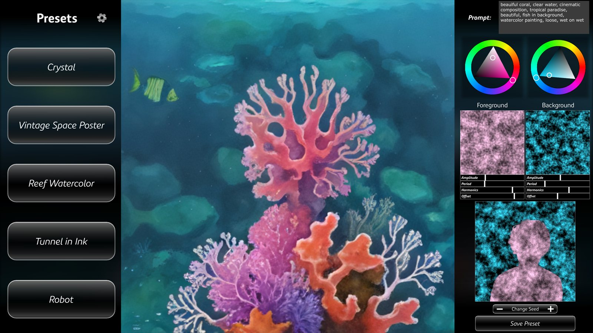
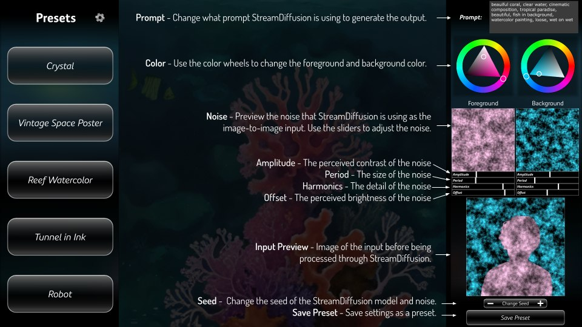

A real-time AI installation where the user becomes both the artist and the art
Role
Artist & Creative technologist
Tools
TouchDesigner · StreamDiffusion · SDTurbo
Venue
SVA MFA Computer Arts
Infinite variation, instantly rendered
Stream of Consciousness is an interactive installation that lets people shape AI-generated imagery in
real time. A webcam puts the user into the image, and a Bluetooth controller lets them change the
installation's settings on the fly.
In Stream of Consciousness, the user becomes both the artist and the
art.

The UI view

The controls, labeled — presets, prompt, and generation settings